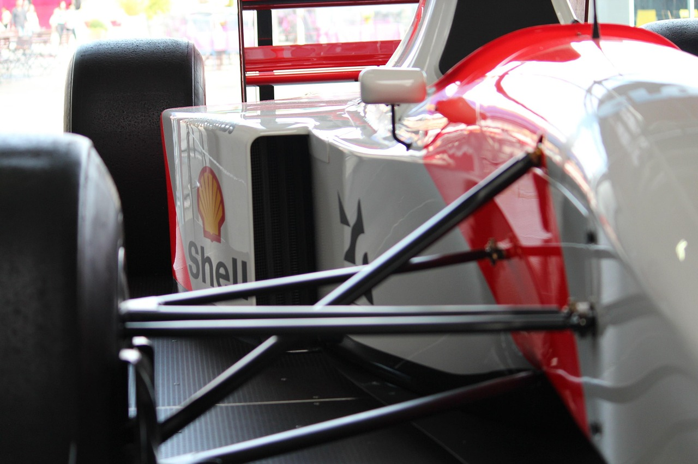

Béisbol
El béisbol me inspira por su estrategia y trabajo en equipo.
Deportes y videojuegos: pasión, historia y emoción en un solo lugar


Explora mis pasiones: deportes, videojuegos y sim racing.
Soy Marco Montalvo, apasionado por el deporte, los videojuegos y la tecnología.
El béisbol me inspira por su estrategia y trabajo en equipo.
El fútbol es pasión global, me interesa tanto la historia como el análisis táctico.
La F1 combina velocidad y tecnología, me atrae la evolución de los autos.
Los simuladores de carreras me permiten vivir la emoción de la pista desde casa.
Disfruto títulos que retan mi creatividad y estrategia.
¿Quieres conversar o colaborar? Escríbeme aquí.